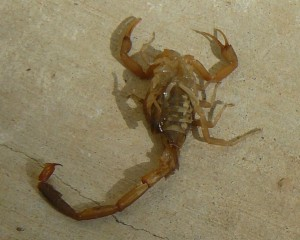
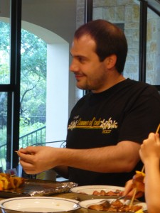
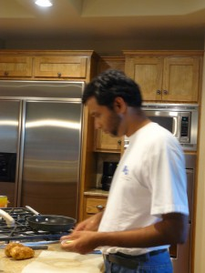
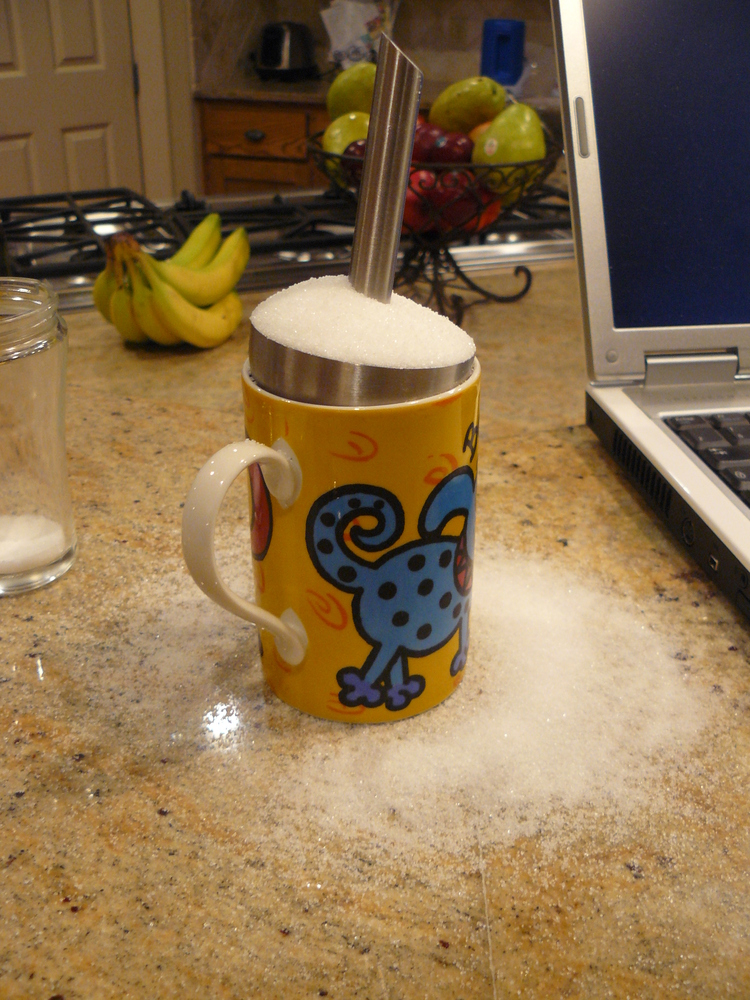

This summer has been hectic (life is hectic anyhow!). As I was switching fields from physics to neuro-imaging, I took the chance to travel to the US and to spend the summer doing Python-related stuff.
Austin - Enthought
I spent most of my time this summer at Enthought, in Austin, Texas. Actually it was the Enthought guys who really made my fantastic summer possible by paying me a good salary and thus indirectly funding my travels. Thanks Enthought, you guys rock.
{kind=link}
Austin is a nice city. It’s got a very nice night life (thought the tequilla doesn’t match Jarrod’s expectations, and they don’t always accept South Africans in bars because they look like kids and “any college kid could fake this ID”).
I don’t know if it is particular to the Enthought guys, or it is just Texans in general, but the hospitality was simply incredible. I spent the summer at Eric Jones’ place (I had a separate little cabin for me, fantastic). I enjoyed a lot interacting with Eric’s family: Courtney and the kids, Zach and Liz. It was fun to be at a place with young children. By the way, they go around in scipy T-shirts and love when daddy’s friends (aka geeks) come around at the house. I bet they know the scipy community better than I do.
Of course, there is a catch: Eric lives out in the boonies (just in case you don’t speak Texan, this means “out in the bush”, ie in a remote location). It might even have been a trap: he lives in a dry county. Moreover, I woke up one morning to find this in my living room:
{kind=link}
It’s not deadly, I have been told, it just hurts a lot. On top of that, the kids brought back a dead black widow one day. Now it may seem to some that I am making a stupid fuss about nothing, but the scariest animals we have where I live are probably cats.
The Enthought office is a very pleasant place to work. It large with a lot of space for everybody. It is full of very nice people (I knew that before coming, but it was nice to have a confirmation). I had the nicest office I have ever had so far (they seem to be improving each time I change jobs, that a good sign). I’ll talk about what I did there in another post (I actually started a screen cast about this, but the state of video-editing software under Linux is abymissimal, and I could never edit the sound track).
{kind=link}
Visits to California
I made two trips to California. First I went to UCLA for a summer school on mathematical method in neuro-imaging. It was the occasion for me to discover the field. One thing that stroke me was the importance of software in the field, and how little people are organized to limit duplication of efforts. On the other hand, we had a very nice presentation about a beautiful software engineering effort (slicer) trying to build a platform to unite tools by Steve Pieper. Fernando and I where gritting our teethes during the talk, wondering what the license of the tools would be, and it turned out that Steve ended his talk with a discussion about why it seemed to him that the BSD was most suited. We were delighted.
My second visit was for the SciPy conference which was great fun. Fun to meet new people in real life, fun to meet old friends. I had the feeling the talks where excellent and I learned a lot of things. After the conference I went to Berkeley with the nipy team. Nipy stands for NeuroImaging in Python. It is a project led by a crack team at Berkeley with Chris Burns, Jarrod Millman, Fernando Perez, Tom Waite and now Matthew Brett. The team I am starting my new job with, in France, hopes to be able to integrate their software with nipy.
Berkeley is a nice place. I stayed at Fernando’s and Jarrod’s and it is always a pleasure to hang out with these guys. As far as work goes, we tried to do some 3D visualization of neuro-imaging data with Mayavi. We got some things done and the week ended in a party at Chris’s place where we greated Jarrod with a mac-book air displaying a really cool view of a brain. However I have the feeling I stayed just long-enough to understand the problems, and not to solve them. Damn, software is hard. Hopefuly my work will allow me to move further in this direction.
Back in France, and off to Prague
Well, after all these travels, I got back to France. Off course the first thing I did with my girlfriend, Emmanuelle, was to shoot out of the country. I need to get away of a computer, sometimes. We went to Prague. It is a very beautyful city, it has good beers, and it is the home town of Ondrej Certik, so that made three good reasons to go there. We had a great week end strolling through the city, in the old streets or in the castles (photos here). Most people there speak English, but I was lucky-enough to order fried cheese (doesn’t that sound nice?) to a lady not speaking English, so we fell back on Russian as a common language, and it is always fun to me to speak Russian (now that’s a long sentence).
We had a bunch of beers with Ondrej. We spent some times talking the world into a better place. We discussed licensing, and agreed that Cython was sooooo cool, and talked about all things under the (scientific Python) sun.
In the past year I have the feeling I have been all over the place. I changed jobs three times, moved houses once in France and twice abroad, and visited a lot of countries for the fun of it. In the near future I am planning to settle down in France to get some work done.
We need help
Speaking of work, I am starting a new career in a new academic field. This is going to require a lot of focus from me, and it will not leave too much time for open source work in the near future. We need help! There are many ways to help and not all of them involve coding. I think I spend not more than 50% of my open-source-devoted time on coding. We need better docs. We need more marketing (we are really bad at this: we have fantastic tools, but it is hard to see them). We need people to help each-others on the mailing lists. We need packaging. All this is paramount and takes a lot of time… And we need coding.
  {kind=link}
{kind=link}
{kind=link}